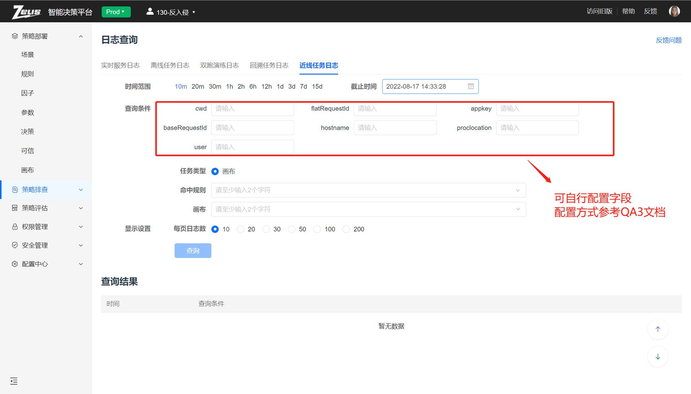
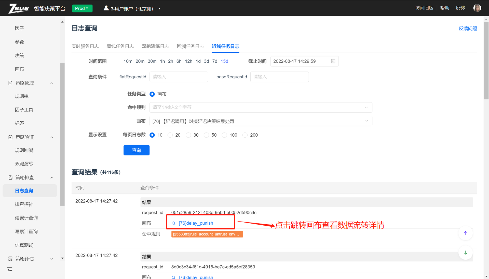
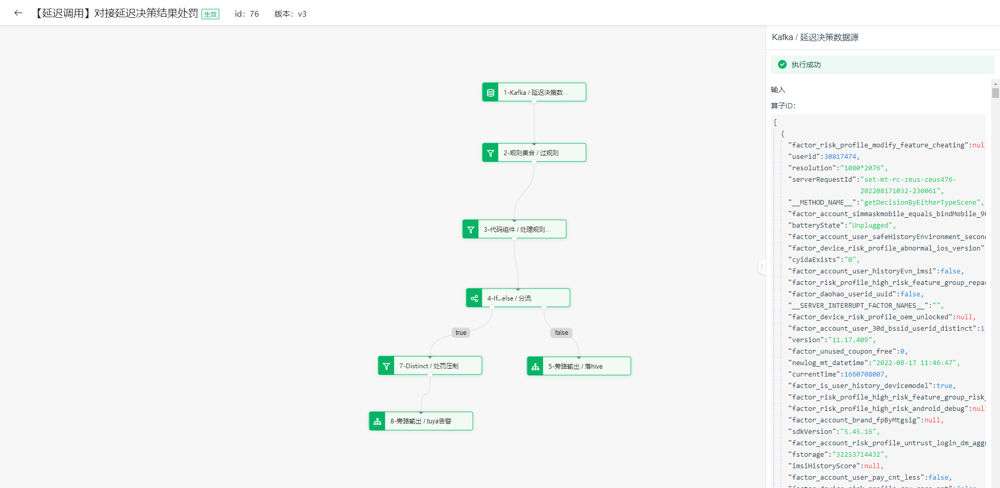

说明：画布 - 近线日志查询及配置
一、背景
-
问题排查成本高：当规则命中时业务可以拿到告警详情数据，但是由于告警数据只是记录了一份画布最终的执行结果，所以不能反向推导出当时画布的执行链路。对于组件比较多，配置比较复杂的画布，当遇到不符合预期的告警比较难准确定位到问题组件，只能通过不断的微调，仿真测试来尝试复现问题
- 规则测试成本高：当前只有生效的规则命中才会发送告警/写kafka，所以业务方在调试过程中需要不断的在规则的标记和生效状态之间反复切换，并且可能由于规则逻辑有问题在被切换为生效状态之后出现大量告警，影响下游服务
- 平台本身能力要求：zeus近线引擎本身也需要具备“自我证明”的能力，用户可以在平台上查到任何一条命中规则的执行日志以及当时的画布执行链路
Zeus日志记录了各业务方使用近线画布做决策的详细数据，包括：画布内的数据流转过程，各组件节点中间数据，命中数据等等相关信息；业务方可使用日志做数据分析、异常排查和问题定位等
当前非全量记录，具体记录逻辑参考下表
|
业务域 |
记录日志逻辑 |
无日志画布(性能考虑，联系rd放开或添加) |
|---|---|---|
|
3 |
命中kafka告警或旁路输出 |
143 |
|
35 |
1075和1107画布 全量记录 |
|
|
38 |
命中kafka告警或旁路输出 |
|
|
130 |
命中金丝雀 |
19,520,15,38,4,18,39 |
二、名词解释
无
三、操作指南
1、web页面：单条、批量查询
-
近线画布线上执行查询
可通过日志查询-近线任务日志查询线上画布执行明细数据。当前默认发送日志条件：“命中任意一条规则 || 命中任意一个决策组件 || 命中任意一个旁路输出组件”；除此之外还支持自定义条件，需要提tt工单找研发后台配置
-
自定义查询字段
在日志配置中自定义配置查询条件说明：日志配置使用文档
-
明细数据单条查询
可通过指定条件查询近15天的明细数据
-
明细数据批量查询
可通过指定画布、命中规则等条件查询近15天分箱数据（group by）,例如：指定画布按命中规则、生效规则group by

-
画布执行数据流转过程透出
将清楚记录画布最终执行到了哪个组件，哪个组件没有执行通过，原因是什么等画布的执行过程，所有组件会记录它们自身逻辑生产的输出内容
|
页面 |
|
|---|---|
|
【入口】 |
 |
|
【线上作业执行数据流转详情页】 |
 |
2、hive表：全量数据查询
-
自定义保存时间：默认hive表保存时间为6个月，若有特殊要求：业务可在上线前同步Zeus侧；
-
独立存储：为保证数据安全，每个接入业务方独立使用一张hive表，基于该表的业务定制化需求请通过ETL实现
-
敏感数据加密：Zeus将对敏感数据进行统一加密，为便于业务使用，会提供解密函数
表单详情如下：
|
字段 |
含义 |
举例 |
|---|---|---|
|
businessId |
业务线 |
3=账号安全业务 |
|
executeTime |
近线请求开始执行的时间 |
unix时间戳（秒）：1659064903 |
|
requestId |
近线请求执行日志唯一标识 |
UUID串：95c8aca1-ad20-4f2b-b128-72308b531c4e 该字段不是zeus实时流量的requestId，后者在context字段中 |
|
logType |
近线日志类型 |
0=画布 |
|
metaConf |
近线配置 |
当logType=0时，该字段结构为json字符串： Hive Sql取数逻辑为：get_json_object(metaConf, '$.canvasId') |
|
hitRuleDetails |
命中的规则详情 |
当logType=0时，该字段结构为json字符串： 只有画布包含“规则集合”组件并且“命中规则”时该字段才会有值 |
|
context |
近线执行日志 |
以账号安全为例，字段zeuscontext, userid, requestId, ruleId, source, debug都会在context字段中 |
-
原始hive表：log.zeus_nearline_log（其他业务后续都可基于这张表写etl洗出自己业务的数据）
账号安全hive表：ba_rc.base_zeus_nearline_log_account
三、使用说明
1、web页面：新接入业务方在开通账号后、业务上线前，在Zeus-->配置中心-->日志配置中配置需要的字段，配置后即可使用。 说明：日志配置使用文档
说明：日志配置使用文档2、hive表：在业务上线前通知Zeus侧，由RD配置hive表单信息和保存时长，配置后反馈业务表名。
四、常见Q&A
Q1：近线日志与画布仿真测试日志的区别是什么
A1：当前画布仿真测试执行日志收集采用了全量收集的方式，简单粗暴地展示了每个组件的输入和输出，没有区分出某些数据是哪些组件产生的，给业务排查问题带来了一些困惑，另外这套逻辑的改造风险和成本也比较高，所以需要重新实现一套能够灵活支持多种存储条件、方便日志查询和画布执行链路还原的功能
Q2：聚合组件记录的聚合值包括以前所有历史聚合详情吗？
A2：不包括
Q3：关于查询条件，后续业务能自己配置查询条件字段吗？
A3：可以，详细的操作参考说明：日志配置使用文档
Q4：满足什么条件的画布日志能搜到？
A4：当前默认条件：“命中任意一条规则 || 命中任意一个决策组件 || 命中任意一个旁路输出组件”；除此之外还支持自定义条件，需要提tt工单找研发后台配置